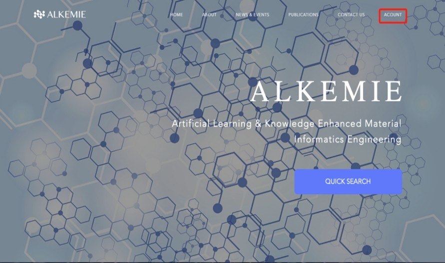
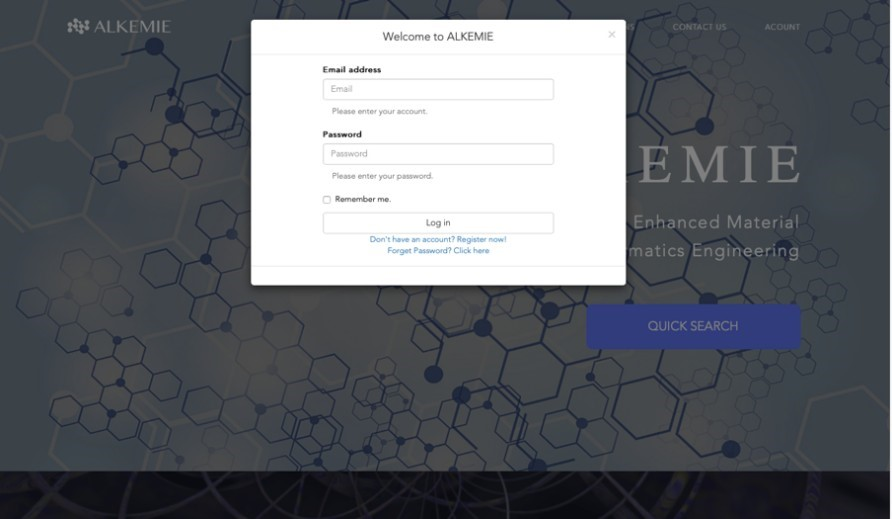
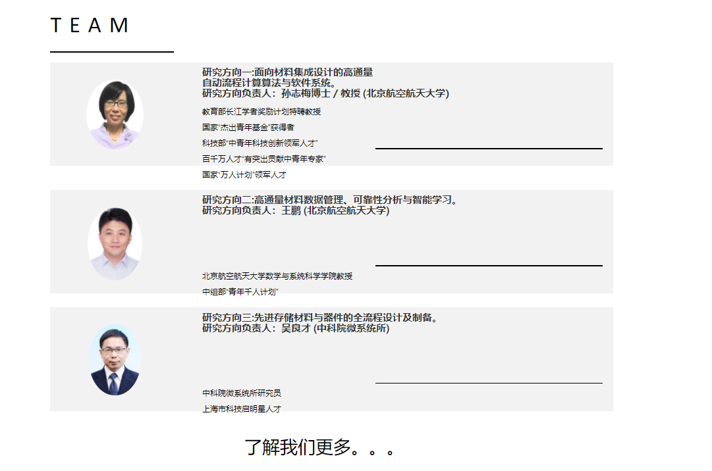
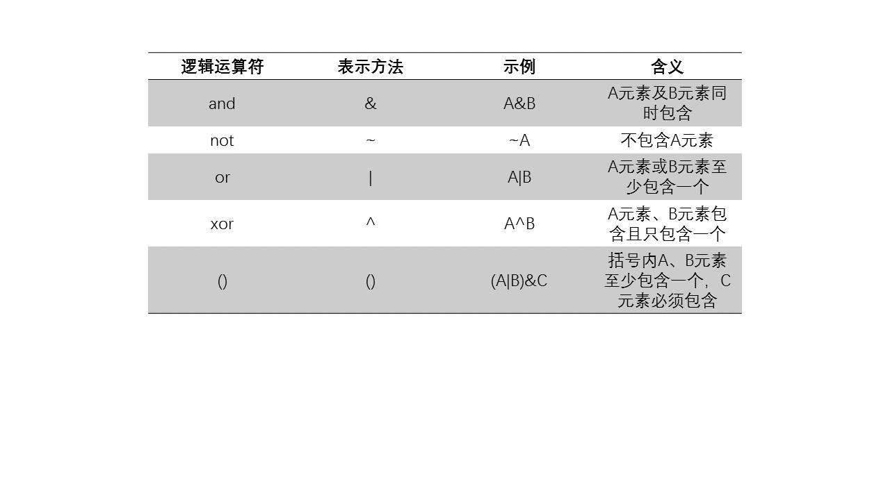
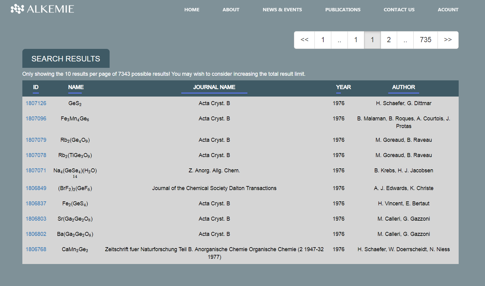
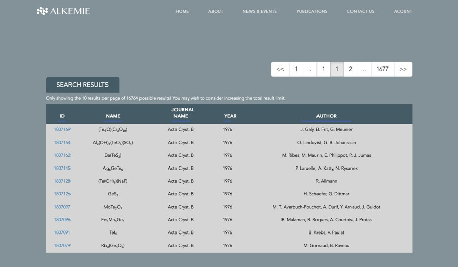
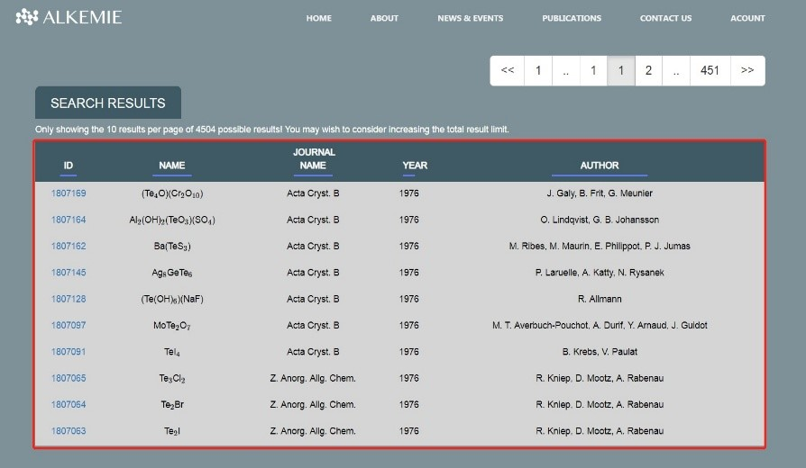

网页版数据库¶
基本介绍¶
ALKEMIE（Artificial Learning and Knowledge Enhanced for Materials Informatics Engineering）是一款具有多尺度集成功能的高通量自动流程计算软件，该软件的网页版是为加速新材料研发，借助材料基因组工程理念，开展高通量自动流程材料集成计算算法与软件研究，并将其应用于相变/阻变两类存储材料，实现先进存储材料从原子到器件的全流程集成设计与制备，改变我国先进存储等功能材料长期依靠经验和试错的研发模式，实现研发周期和研发成本的“双减半”，打破当前我国存储器几乎完全依赖进口的局面，同时为其他功能材料及器件的研发提供方法与示范。该软件得到集成计算材料科学（ICME）中心、软件开发环境国家重点实验室、数学，信息与行为教育部重点实验室、北京市大数据与脑机智能高精尖创新中心、信息功能材料国家重点实验室、材料基因信息技术实验室、粉末冶金国家重点实验室、中科院微电子器件与集成技术重点实验室信息存储材料及器件研究所、福建省超级计算中心等支持。
软件特色
可视化，用户友好的操作界面;
拥有完整的数据查询，数据存储的材料学数据库;
可移植性强:适用于Windows，Linux等操作系统;
可远程方便访问，支持移动端使用；
支持以元素和逻辑连接的复杂查询条件。
软件功能
支持远程查询材料信息，三维显示材料结构;
拥有18万组材料结构数据，可以自动查询并提交任务;
支持10种不同的vasp自动计算。
注册¶
用户需在浏览器地址栏输入http://www.alkemie.com.cn/，即可进入ALKEMIE官网。
注册账户时，用户可将鼠标置于导航栏最右侧“ACCOUNT”按钮，如图所示：
{kind=link}
跳转至下拉菜单，点击 REGISTER 按钮，此时网页跳转到注册界面。注册界面内，在 Username 栏内输入网站注册者姓名； Email 栏内输入注册者有效邮箱； Password 栏内输入密码（为保证安全，设置6位及以上数字，字母交叉的密码为好）； Confirm Your Password 栏内再次输入上述已设置的密码；点击 I have read and agree to the Terms of Use 左侧方框；最后点击 Register ；此时，网页上会显示提示“注册成功，验证邮件已发送，即将返回首页..”，注册完成后用户注册时所使用的邮箱内会收到一份验证邮件，邮件内容为一个网址，功能是用来激活该用户的账号。如图所示:
{kind=link}
复制该网址，在浏览器地址栏内粘贴该网址，回车，网页会弹出一个提示框，系统提示“激活成功！即将返回首页”，点击 关闭 ，此时系统将自动回到网站首页。
Warning
请不要重复粘贴激活网址，当用户二次或多次粘贴该网址时，系统会显示“激活失败！请勿重复激活”。
注册成功后，页面会自动跳转至网站首页。此时，用户需使用注册信息进行登录，登录成功后，才能使用该平台。登录流程见下文。
登录¶
用户登录该网站时，鼠标置于导航栏最右侧“ACCOUNT”按钮，鼠标悬浮的同时，跳转至下拉菜单，点击“LOG IN”，此时页面跳转至登录界面，将基本信息填写至悬浮框内，如图所示：
{kind=link}
登录界面中，在 Email address 栏内，输入已注册的有效邮箱； Password 栏内，输入预留密码；点击 Remember me 前的小框；最后点击 Log in 即可成功登录；若登录时密码输入错误，则会提示“登录失败，请重新检查用户名及密码”。
成功登录平台后，即可开始相关查询或者继续学习内容。
平台基本介绍¶
平台介绍¶
登录该网站后，用户即可使用该网站内的数据资源。
首页的导航栏内有“HOME”项，“ABIOUT” 项，“NEWS&EVENTS”项，“PUBLICATION”项，“CONTACTUS”项，“ACCOUNT”项，下面我们将会一一介绍导航栏内各项。
用户点击 HOME ，此时网页所示页面为网站主页，鼠标置于“ABOUT”,进入“ABOUT”导航栏，导航栏的下拉菜单中，是该平台的详细介绍，具体分为四个部分，分别为如图所示：平台简介、总体目标、支撑情况、研发队伍。
平台简介
用户鼠标点击下拉菜单中不同选项，即可跳转至不同界面。点击
平台简介，页面跳转到“平台简介”界面，界面介绍了该平台研发的目的及意义。
总体目标
用户点击下拉菜单中
总体目标，页面跳转到“总体目标”界面，界面介绍了该平台最终要实现的目标及总体的规划。
支撑情况
用户点击下拉菜单中
支撑情况，页面跳转到“支撑情况”界面，界面介绍了平台建设过程中支撑单位的支持情况。本平台及课题在开展建设过程中得到了集成计算材料科学（CME）中心、软件开发环境国家重点实验室等支持。
研发队伍
用户点击下拉菜单中
研发队伍，页面跳转到“研发队伍”界面，研发队伍中首页显示的是该项目课题一到课题三负责人基本信息，若用户想要了解研发团队，可到该页面进行浏览。如图所示：点击
了解我们更多。。。，可了解本课题参与人员的具体信信息。界面左侧窗口是各位负责人详细介绍，右侧缩略图是也可点击，为各个课题主要参与人员及网站前后端负责同学的详情。用户点击
TEACHER1，页面跳转到“TEACHER|”界面，页面左侧为课题一负责人孙志梅教授的基本信息，右侧下拉菜单中为课题一各参与单位人员信息。用户点击
TEACHER||，页面跳转到”TEACHER||”界面，页面左侧为课题二负责人王鹏教授的基本信息，右侧下拉菜单中为课题二各参与单位人员信息。用户点击
TEACHER|||，页面跳转到“TEACHERE|||”界面，页面左侧为课题三负责人吴良才教授的基本信息，右侧下拉菜单中为课题三各参与单位人员信息。用户点击
STUDENT，页面跳转到“STUDENT”界面，该页面内所列学生均为参与平台前后端设计的成员。
{kind=link}
NEWS & EVENTS¶
用户点击 NEWS & EVENTS ，页面跳转到“NEWS & EVENTS”界面，页面内介绍了近期项目组各项进展及相关新闻，定时有专门负责同学对内容进行更新。
用户点击页面三栏，该页面内可查看项目年度进展会议新闻、项目实施方案会新闻以及材料基因组专项启动会新闻。
PUBLICATIONS¶
用户点击 PUBLICATIONS ，页面跳转至“PUBLICATIONS”，该页面内显示内容为课题组自项目申请之日到目前为止发表的论文信息。三个年份均可点击进去，点击 2019 ，用户可查看2019年PUBLICATIONS，结果显示为2019年课题组成员发表论文基本信息。用户点击 2018 ，查看2018年PUBLICATIONS，结果显示为2018年课题组成员发表论文基本信息。用户点击 2017 ，查看2017年的PUBLICATIONS，结果显示为2017年课题组成员发表论文基本信息。
CONTACT US¶
用户在导航栏内点击 CONTACT US ，页面跳转到“CONTACT US ”界面，界面输入框内可输入用户姓名，邮箱留言等信息，点击 Send Message ，ALKEMIE后台工作人员即可对用户的信息进行反馈，解决用户的问题。
Note
以上操作可在导航栏内点击相应下拉菜单中选项，使网页进行跳转，也可直接下拉主页面，实现网页的跳转，找到相应页面，进行对应操作。
检索¶
检索相变材料数据库，组编材料数据库，热力学相图数据库内数据。
QUICKSEARCH检索¶
方法一：直接点击 HOME 页中 QUICKSEARCH 键，进入“查询界面”，整个查询界面是由一个化学元素周期表及一个搜索框构成。可在元素周期表上进行元素选择，输入框内可显示已输入或者选择的元素。元素输入框在查询界面元素周期表上方，用户可在输入框内直接输入所需元素，也可直接在下方的元素周期表中选择目标元素，进行查询。可选择某单一元素，也可为元素的组合。选择多个元素时，元素间需用逻辑运算符相连。
输入框下方有六个逻辑运算符，分别为“and”,“not”，”or”,”xor”,“ （ ” ，“ ） ” 。下表解释了各逻辑运算符的表示方法及含义：
{kind=link}
使用不同的逻辑运算符时，即使输入相同元素，查询结果不一致。下举例说明输入元素Ge、Sb、Te、元素及不同运算符时，查询所得的不同结果。
示例1
查询含有Ge、Sb及Te元素及逻辑运算符“and”
在元素周期表中点击元素 Ge ，点击输入框下方逻辑运算符 and ，继而回到元素周期表选择元素 Sb ，再次点击输入框下方逻辑运算符 and ，最后回到元素周期表选择元素 Te 选择后结果如图所示：
{kind=link}
点击输入框后的 search！ 查询结果如图所示：
{kind=link}
由查询的结果页可知，查询的结果的化合物是Ge元素，Sb元素及Te元素组成的交集，即使用逻辑运算符“and”时，不管在输入框内包含几种元素，所选中的元素均要包含。
Note
元素周期表上方输入框内的元素允许改动，需要改动时只需将鼠标置于已选入的输入框内的位置，使用 delete 键即可删除已选元素，再次点击目标元素即可添至输入框。
结果显示页面中，每页仅显示10条结果数据，且结果中若需查看更多结果，可点击页面右上方页码栏，从而选择要查看的结果页。
在查询结果页中，共有5列，分别为 ID 列， NAME 列， JOURNAL NAME 列， YEAR 列， AUTHOR 列。其中，每条数据都有唯一对应的 ID ， NAME 列内容为化合物名称， JOURNAL NAME 列为化合物初次刊出时的期刊名称， YEAR 列为化合物在期刊上刊出的年份， AUTHOR 列为化合物的作者。点击页面左侧第一列每种化合物对应的ID，点击ID列后，可进入二级界面，显示对应化合物详细的信息。如图所示：
{kind=link}
图示为化合物GeSb2Te4结构信息。页面左侧显示的是GeSb2Te4的三维原子图，将鼠标置于三维图像上，并拖动鼠标，图像会根据鼠标的拖动而呈现出化合物不同角度的视图。右侧第一个表格中数据为化合物晶胞参数；下拉页面，右侧第二个表格中数据为位置信息；右侧第三个表格中数据为点阵信息。
其他搜索结果栏显示的是该页面化合物ID附近的化合物，点击页面中显示的任何一个化合物，即可进入其详细信息页。
示例2
查询含有Ge，不含Sb及Te元素，使用逻辑运算符“and”与“not”
在元素周期表中点击元素 Ge ，点击输入框下方逻辑运算符 and ，添加 （） ，点击输入框下方逻辑运算符 not ，继而回到元素周期表选择元素 Sb ，再次点击输入框下方逻辑运算符 and ，添加 （） ，点击输入框下方逻辑运算符 not ，最后回到元素周期表选择元素 Te 选择后结果如图所示：
{kind=link}
点击输入框后的“search！”查询结果如图所示：
{kind=link}
由查询的结果页可知，查询的结果的化合物是含Ge元素，不含Sb元素及Te元素组成的并集。
结果显示页面中，每页仅显示10条结果数据，且结果中若需查看更多结果，可点击页面右上方页码栏。从而选择要查看的结果页。
在查询结果页中，共有5列，分别为 ID 列， NAME 列， JOURNAL NAME 列， YEAR 列， AUTHOR 列。其中，每条数据都有唯一对应的“ID”， NAME 列内容为化合物名称， JOURNAL NAME 列为化合物初次刊出时的期刊名称， YEAR 列为化合物在期刊上刊出的年份， AUTHOR 列为化合物的作者。点击页面左侧第一列每种化合物对应的ID，可进入二级界面，显示对应化合物详细的信息。如图所示：
{kind=link}
图示为化合物GeS2结构信息。页面左侧显示的是GeS2的三维原子图，将鼠标置于三维图像上，并拖动鼠标，图像会根据鼠标的拖动而呈现出化合物不同角度的视图。页面中右侧第一个表格中数据为化合物晶胞参数；下拉页面，右侧第二个表格中数据为位置信息；右侧第三个表格中数据为点阵信息。
其他搜索结果显示的是该页面化合物ID附近的化合物，点击任何一个化合物，即可进入其详细信息页。
示例3
查询含有Ge、Sb及Te元素及逻辑运算符“or”
在元素周期表中点击元素 Ge ，点击输入框下方逻辑运算符 or ，继而回到元素周期表选择元素 Sb ，再次点击输入框下方逻辑运算符 or ，最后回到元素周期表选择元素 Te 选择后结果如图所示：
{kind=link}
点击输入框后的“search！”查询结果如图所示：
{kind=link}
由查询的结果页可知，查询的结果的化合物是Ge元素，Sb元素及Te元素组成的并集，即使用逻辑运算符“or”时，所选中的元素至多全部包含，至少包含其中一种。
结果显示页面中，每页仅显示10条结果数据，且结果中若需查看更多结果，可点击页面右上方页码栏，从而选择要查看的结果页。
在查询结果页中，共有5列，分别为 ID 列， NAME 列， JOURNAL NAME 列， YEAR 列， AUTHOR 列。其中，每条数据都有唯一对应的“ID”， NAME 列内容为化合物名称， JOURNAL NAME 列为化合物初次刊出时的期刊名称， YEAR 列为化合物在期刊上刊出的年份， AUTHOR 列为化合物的作者。点击页面左侧第一列每种化合物对应的ID，可进入二级界面，显示对应化合物详细的信息。如图所示：
{kind=link}
同样的，该页面左侧显示该化合物三维视图，右侧各表显示基本信息。
示例4
查询含有Ge及Te元素及逻辑运算符“xor”
在元素周期表中点击元素 Ge ，点击输入框下方逻辑运算符 xor ，继而回到元素周期表选择元素 Te ，选择后结果如图所示：
{kind=link}
点击输入框后的 search! 查询结果如图所示：
{kind=link}
由查询的结果页可知，查询的结果的化合物是Ge元素与 Te元素中的一种，即使用逻辑运算符“xor”时，所选中的元素含且仅含一种。
结果显示页面中，每页仅显示10条结果数据，且结果中若需查看更多结果，可点击页面右上方页码栏，从而选择要查看的结果页。
在查询结果页中，共有5列，分别为 ID 列， NAME 列， JOURNAL NAME 列， YEAR 列， AUTHOR 列。其中，每条数据都有唯一对应的“ID”， NAME 列内容为化合物名称， JOURNAL NAME 列为化合物初次刊出时的期刊名称， YEAR 列为化合物在期刊上刊出的年份， AUTHOR 列为化合物的作者。点击页面左侧第一列每种化合物对应的ID，可进入二级界面，显示对应化合物详细的信息。如图所示：
{kind=link}
图示为化合物（Te4O）（Cr2O10）结构信息。页面左侧显示的是（Te4O）（Cr2O10）的三维原子图，将鼠标置于三维图像上，并拖动鼠标，图像会根据鼠标的拖动而呈现出化合物不同角度的视图。页面中右侧第一个表格中数据为化合物晶胞参数；下拉页面，右侧第二个表格中数据为位置信息；右侧第三个表格中数据为点阵信息。
其他搜索结果显示的是该页面化合物ID附近的化合物，点击任何一个化合物，即可进入其详细信息页。
示例5
查询含有Ge、Sb及Te元素及逻辑运算符“xor”
因为逻辑运算符“xor”能且只能对两项元素进行运算，因此若三项及多项元素用到此运算符时，应正确加入“（” ， “）”运算符，使得“xor”前后只有两项。当然，括号内允许运算符的存在。点击输入框下方逻辑运算符 （ ，在元素周期表中点击元素 Ge ，点击输入框下方逻辑运算符 and ，继而回到元素周期表选择元素 Sb ，再次点击输入框下方逻辑运算符 ） 及逻辑运算符 xor ，最后回到元素周期表选择元素“Te”选择后结果如图所示：
{kind=link}
点击输入框后的“search！”查询结果如图所示：
{kind=link}
由查询的结果页可知，查询的结果的化合物是Ge元素和Sb元素，或者Te元素中的一种。
结果显示页面中，每页仅显示10条结果数据，且结果中若需查看更多结果，可点击页面右上方页码栏，从而选择要查看的结果页。
在查询结果页中，共有5列，分别为 ID 列， NAME 列， JOURNAL NAME 列， YEAR 列， AUTHOR 列。其中，每条数据都有唯一对应的“ID”， NAME 列内容为化合物名称， JOURNAL NAME 列为化合物初次刊出时的期刊名称， YEAR 列为化合物在期刊上刊出的年份， AUTHOR 列为化合物的作者。点击页面左侧第一列每种化合物对应的ID，可进入二级界面，显示对应化合物详细的信息。如图所示：
{kind=link}
图示为化合物（Te4O）（Cr2O10）结构信息。页面左侧显示的是（Te4O）（Cr2O10）的三维原子图，将鼠标置于三维图像上，并拖动鼠标，图像会根据鼠标的拖动而呈现出化合物不同角度的视图。页面右侧第一个表格中数据为化合物晶胞参数；下拉页面，右侧第二个表格中数据为位置信息；右侧第三个表格中数据为点阵信息，如图所示：
其他搜索结果显示的是该页面化合物ID附近的化合物，点击任何一个化合物，即可进入其详细信息页。
Note
点击 QUICK SEARCH 快捷键处，由此筛选出的数据为相变材料、阻变材料数据，热力学相图数据库内的数据，若想分别查询，可使用方法二，在平台页面处直接点击相应的数据库，进入对应数据库，按照用户自己的需求进行查询。
{kind=link}